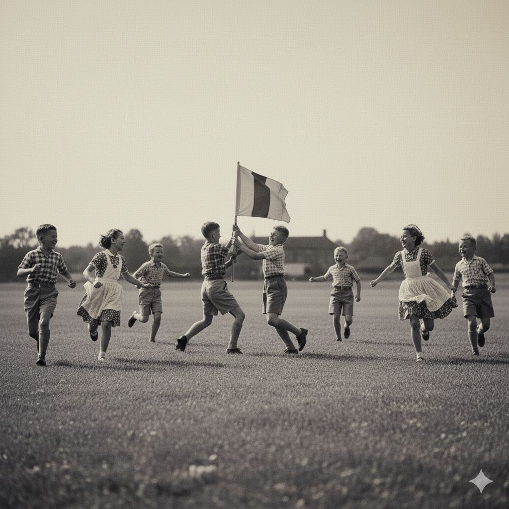

DESCRIZIONE DEL GIOCO
Il gioco denominato "Ruba Bandiera" viene impiegato per lo sviluppo dei riflessi, della velocità di scatto e della disciplina di squadra. Si svolge in un'area pianeggiante priva di ostacoli.

Fig. 1: Fase di ingaggio tra due allievi contrapposti.
PROCEDIMENTO OPERATIVO:
- Suddivisione dei partecipanti in due compagini numericamente uguali.
- Assegnazione di un numero progressivo ad ogni componente di ciascuna squadra.
- Posizionamento di un "Portabandiera" al centro, munito di un drappo di stoffa.
- Alla chiamata del numero, i due allievi corrispondenti devono scattare verso il centro.
L'obiettivo consiste nel sottrarre il drappo e rientrare nella propria base senza essere toccati dall'avversario. È severamente vietato il contatto fisico violento.
Note dell'Istruttore: Gli allievi dimostrano grande spirito agonistico. Si consiglia di alternare le chiamate per mantenere alto il livello di attenzione.